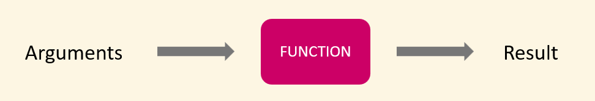
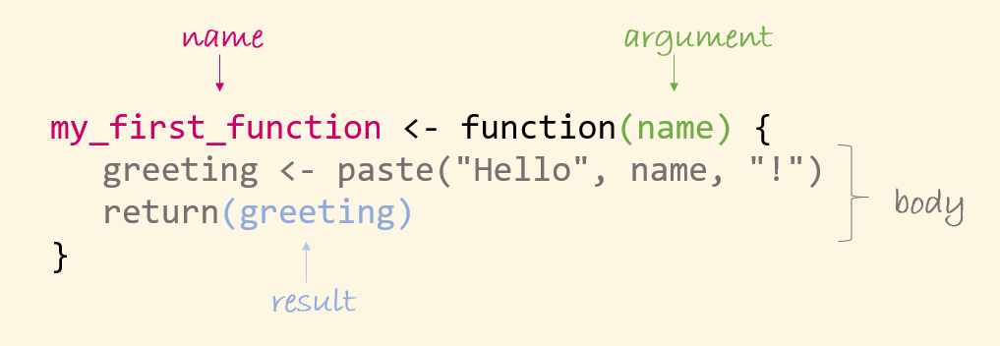

Going further with R - session 1/2
Cirad - UnB
2025-05-22
Let’s load the package we will use:
Vector creation
Combine elements into a vector
We already saw how to use c to combine values to create a vector. This function is applicable to any mode of vector:
Repeat elements
We can also use rep to repeat individuals values of any mode:
- repeating a vector several times:
- repeating each value several times:
- specifying the output length of the vector:
Create numeric sequences
We have seen how to use : to create a numeric sequence:
[1] 1 2 3 4 5 6 7 8 9 10We can also use seq, which allow selecting
Predefined letter vectors
letters and LETTERS are predefined vectors of letters:
They can be used with other functions:
Generate factor levels
gl creates factors of a given number of level n and a given number of replications k:
The levels can also be specified:
Generate empty vectors
Empty vectors with a specified mode can be generated with numeric, logical and character:
Random sampling
Random samples can be drawn using sample:
[1] "Lucas" "João" By default, sampling is done without replacement:
Error in sample.int(length(x), size, replace, prob) :
cannot take a sample larger than the population when 'replace = FALSE'We can specify if sampling is done with replacement:
Random sampling
sample can be used to shuffle values:
[1] "Mar" "Jan" "Oct" "Jul" "May" "Nov" "Jun" "Dec" "Apr" "Sep" "Feb" "Aug"💡 As the sampling is done randomly, the result is different each time:
Generate random numbers from distributions
We have seen how to randomly draw numbers from a uniform distribution:
[1] 2.7778120 -0.4722338 -0.2805985 0.3313314 -1.7256134and from a normal distribution:
Generate random numbers from distributions
Other distributions can be used:
- Binomial (number of success in a fixed number of trials):
- Poisson (discrete positive integers, typically used for counts):
Saving objects
We have seen how to export data frames to CSV files, plot to image files. But in R, we can also save objects in a way that retains their internal structure and type.
In R, almost everything is an object (including vectors, lists, data frames, functions, models, and plots). This makes it possible to save and reload them exactly as they were.
Saving a single object
We can save a single object to a .rds file using the function saveRDS:
A .rds can be open with readRDS:
[1] "Lucas" "Gabriel" "Ana" "Maria" "João" This only reads the object, so we would need to assign it to an object to load it into the environment.
The name of an object is not preserved when saved as .rds.
Saving one or several objects
We can save one or multiple objects into a single .RData file using the function save:
This loads all the objects contained in the file directly into the environment.
The name of the objects are preserved.
Saving the entire workspace
All the objects of a work session can be saved together as a .RData file using the function save.image:
Writing your own functions
What is a function?
As previously seen, a function take one or several arguments (data, parameters, options) as in put, performs some code, and returns a result:
Why writing functions?
When you need to repeat the same actions more than twice, it is recommanded to write a function. This helps:
Avoid code duplication
Make your code reusable across multiple scripts and projects — and even organise it into a package
⚠️ Copying and pasting has several drawbacks:
It’s error-prone (e.g., updating some but not all instances of a variable)
If you want to modify/update/correct the code, you have to modify it everywhere manually
Structure of a function
To create a function, we use the instruction function:
the arguments will be specified in the ()
the code of the function will be written in the {}, which is the body of the function
Structure of a function - name
To be able to call a function to use it, we need to give it a name.
Let’s create a function called my_first_function:
⚠️ Be careful not to give the name of an already existing function to your function. This would replace the existing function until you restart your session.
Structure of a function - result
This function will say hello (what a lovely function 😊).
This mean that it will return a character string saying hello as a result:
Structure of a function - argument and body
We now want to personalise our greeting…
Let’s add an argument that we call name to our function, and use it in the code that we write in the body of the function:
We can now pass a value to this argument when running the function:
[1] "Hello João !"Note that we can also pass a vector:
[1] "Hello Lucas !" "Hello Gabriel !" "Hello Ana !" "Hello Maria !"
[5] "Hello João !" :::
Structure of a function
Arguments
A function can have several arguments:
[1] 10or none (see our very first function)…
Loading and updating a function
To be able to use a function, it must be loaded in the environment.
To do this, we execute the code of the function (i.e. the code that creates the function).
⚠️ After updating a function, you must execute the code again to load the updated version.
Writing a function step by step
We now want to write a function that calculates the mean diameter (in m) when given a vector of circumference (in cm).
Step 1: plan
Let’s start identifying the arguments and planning the operations (without running the code):
Writing a function step by step
Step 2: create test data and argument
Try to create data as close as possible to the one you will be using.
Here we create a vector of circumference that contain NA:
[1] 117.31350 187.63300 229.02966 169.07849 141.39283 171.92299 103.29758
[8] 60.29271 172.76568 NAWriting a function step by step
Step 3: develop the code
The code is developed line by line, testing every line (or almost every line…) :
[1] 0.3734205 0.5972544 0.7290240 0.5381935 0.4500674 0.5472479 0.3288064
[8] 0.1919176 0.5499302 NAWriting a function step by step
Step 3: develop the code
[1] NABecause of the NA, the mean is not calculated… How do we want to handle this? We can let the user decide…
Writing a function step by step
Step 3: develop the code… and add arguments if needed
Let’s add an argument to let the user choose what to do with NA, and give it a test value
[1] 0.4784291💡 na.rm is an argument of the function mean. We pass it an argument of our own function.
Writing a function step by step
Step 3: develop the code… and add arguments if needed
We would like to round the mean diameter, let’s add a new operation and an argument giving the number of decimals.
# Arguments
circ <- test_circ # vector of circumference in cm
na_act <- TRUE # boolean: remove NA?
digits <- 2 # integer: number of digits to keep
# Body of the function
# Calculate diameters in m
diam <- circ / (pi * 100)
# Calculate the mean value
mean_diam <- mean(diam, na.rm = na_act)
# Round the diameter
mean_diam <- round(mean_diam, digits = digits)
# Return the mean diameter
mean_diam [1] 0.48Writing a function step by step
Step 4: create the function: add a name, add he instruction function, put the argument in () and the code in {}, add return (optional)
Writing a function step by step
Step 5: test the function
⚠️ Don’t forget to remove the test arguments from the environment before testing.
Side effects
The objective of a function may not be to return a result, but to perform an action, such as returning a graph, printing a message or a value, saving a file…
These actions are called side effects.
In these case, we will not need return.
Side effects
For a function aiming to print a value in the console, we can use print:
[1] 14Message
We can also include a message in a function:
Random generation of 100 numbers.The smallest generated number is 0.009959208Passing arguments to a function
When passing arguments to a function, we can specify them
- by their names:
- by their position
💡 Usually the data are passed by position, and the rest by name.
Default values of arguments
Let’s go back to our mean_diam function. If we don’t specify the values for all the arguments, we get an error:
Error in mean_diam(new_circ) :
argument "na_act" is missing, with no defaultWe can specify default values that are taken by the arguments if no values is passed :
[1] 0.39⚠️ When using a function, providing a value for an argument with a default value is optional, but it is compulsory for the arguments without default values.
The … argument
We can add … to allow passing all possible arguments to a function we call inside our function, without needing to specify them explicitly:

Result of a function
We don’t necessary have to use return to return the result of a function:
can be written
or even
Result of a function
The instruction return ends the execution of a function, so we cannot use return twice:
[1] 15.05Functions within functions
It is possible to use a function (including a home made one) within a function.
Splitting a big function into smaller nested ones makes each step clearer and easier to maintain.
In addition, these small functions can potentially be reused in other parts of your code.
Sourcing a function
It is recommended to write each function in a separate script and place these scripts in a dedicated folder within your project, usually called R. An exception can be made for small functions or functions used only once in a single script.
Using our own functions with dplyr
Let’s create an example data set containing responses to an opinion poll, coded on a Likert scale:
# A tibble: 6 × 5
id Question1 Question2 Question3 Question4
<chr> <fct> <fct> <fct> <fct>
1 A 4 3 4 4
2 B 5 4 5 5
3 C 4 3 4 3
4 D 4 2 2 4
5 E 4 1 2 2
6 F 5 1 3 2 We want to recode the responses to make them more explicit. We could recode each variables manually using mutate and fct_recode but this would be very tedious…
Using our own functions with dplyr
We can instead create a function to do the recoding:
and use it with mutate to recode all variables:
# A tibble: 6 × 5
id Question1 Question2 Question3 Question4
<chr> <fct> <fct> <fct> <fct>
1 A Agree Neutral Agree Agree
2 B Strongly agree Agree Strongly agree Strongly agree
3 C Agree Neutral Agree Neutral
4 D Agree Disagree Disagree Agree
5 E Agree Strongly disagree Disagree Disagree
6 F Strongly agree Strongly disagree Neutral Disagree This is just an example with mutate, but we can use our own function with many dplr functions.
Scope of variables
Objects created in a script are global variables, they can be accessed at any point of a session.
Objects created in a function are local variables.
Scope of variables - Rule 1
If a function uses a local object that was not created within the function, nor passed as an argument, we get an error:
Error in my_func() : object 'obj' not foundBut if the object is present in the global environment (global object), the function can access it (Rule 1):
Scope of variables - Rule 2
An object created within a function exists only within the function (if it it not returned as a result):
Error in eval(expr, envir, enclos) : object 'random_vec' not foundScope of variables - rule 3
A local object created within a function or passed as an argument has priority over a global object:
[1] 10Scope of variables - Rule 4
The consequence of rule 3 is that a function cannot modify a global object:
et voir si j’ai besoin de revenir là dessus : https://juba.github.io/tidyverse/14-fonctions.html#les-fonctions-comme-objets
Acknowledgments
Barnier J. Introduction à R et au tidyverse in French
Introduction à l’analyse d’enquêtes avec R et RStudio - Julien Barnier, Julien Biaudet, François Briatte, Milan Bouchet-Valat, Ewen Gallic, Frédérique Giraud, Joël Gombin, Mayeul Kauffmann, Christophe Lalanne, Joseph Larmarange, Nicolas Robette in French
Ressources
Wickham H., Cetinkaya-Rundel M., Grolemund G. R for Data Science - Chapter on functions in English and in Portuguese
Wickham H. Advanced R - Chapter on functions in English